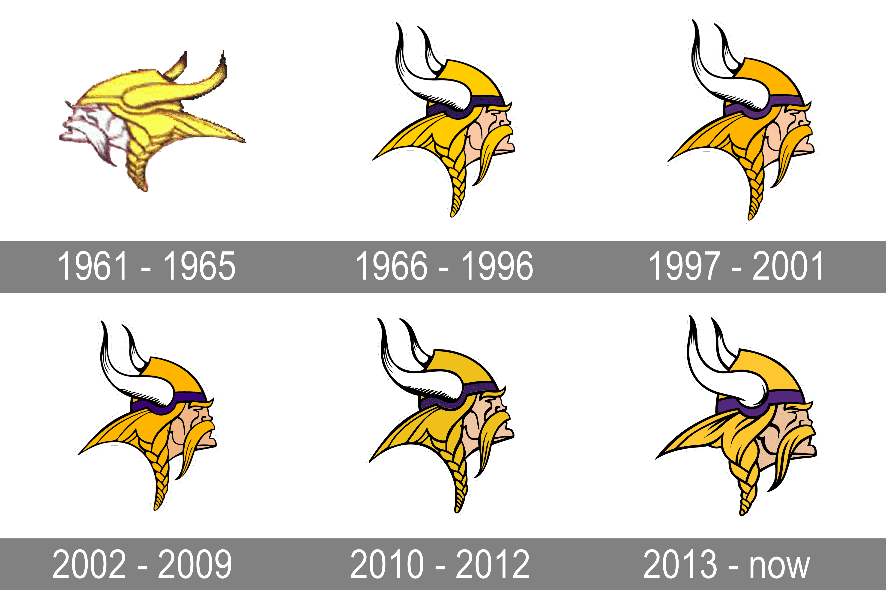

The Vikings didnt start out with the logo we have today they have made lots of changes to their Logo. In 1966 it was changed into a more modern looking logo that we see today. In 1997 they changed from the neon yellow to a golden yellow. in 2002 it changed a little. In 2010 it changed to add depth to the horns. In 2013 we have the logo that we see today.

From https://1000logos.net